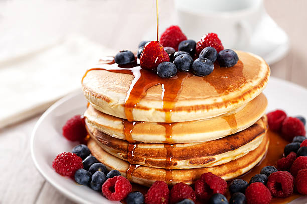

Home
Pancakes

Description
Fluffy, golden pancakes that are quick to make and perfect for a weekend breakfast. They only need a few pantry staples and can be topped with fruit, syrup, or butter.
Ingredients
- 2 eggs
- 250 ml milk
- 125g flour
- 1 tbsp sugar
- Pinch of salt
- 1 tbsp melted butter
- A little butter or oil for the pan
Steps
- Whisk eggs and milk together.
- Add flour, sugar, and salt. Whisk until smooth.
- Stir in the melted butter.
- Heat a lightly greased pan over medium heat.
- Pour in a small amount of batter and swirl the pan to make a very thin layer.
- Cook for about 1 minute, flip, and cook another 20–30 seconds.
- Repeat with the remaining batter.